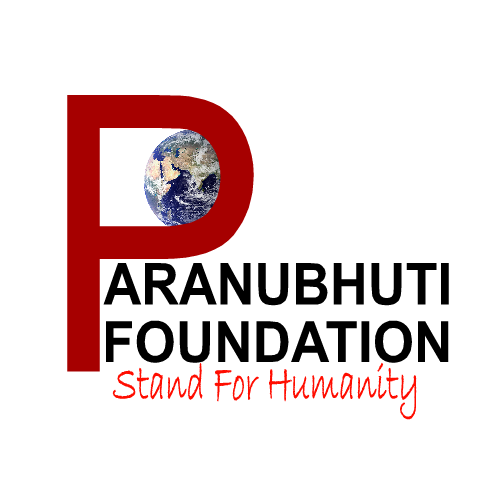

Work Samples
← Back to Experience
Content Strategy & PR Intern
Leadership PR Storylines — Paranubhuti Foundation
Developed structured PR narratives for the foundation’s leadership, including the Founder and senior team members. The document highlights their professional journeys, leadership vision, and the foundation’s mission of translating empathy into measurable social impact.
View StorylinesPR Messaging & Communication Framework
Created a messaging framework outlining the foundation’s key causes, impact narratives, and donor-focused communication themes across healthcare, education, empowerment, and sustainability initiatives.
View FrameworkPress Feature Article — Paranubhuti Foundation
Authored a long-form press-style feature article presenting the foundation’s mission, leadership team, and community impact initiatives, designed for adaptation across media coverage, brochures, and digital platforms.
View Feature ArticleBeneficiary Story — From Darkness to Dignity
Crafted a human-interest beneficiary narrative documenting the real-life impact of the foundation's livelihood and community development initiatives — highlighting 1,900+ cataract surgeries, 9,500+ health screenings, and 1,000+ livelihood products distributed.
Fundraising Appeal Script — Your Support Can Change a Life Today
Developed an emotionally compelling fundraising appeal script structured to communicate the reality of underserved communities, the foundation's interventions (free eye camps, cataract surgeries, livelihood initiatives), and a clear donor call-to-action.
Podcast / Interview Script — Paranubhuti Foundation
Wrote a structured podcast and interview script covering the foundation's origin story, charity store initiative, long-term impact goals, and donor/volunteer engagement — designed for media appearances and storytelling-driven outreach.
Social Media & Campaign Content — Paranubhuti Foundation
Created a suite of social media and campaign content including emotional story-style posts, short impactful posts, and a campaign titled "From Hands to Hope" — focused on the charity store initiative, women empowerment, and tribal development.
Social Media Post — Emotional Story Style
What if a simple handmade flower could change someone's life? In a small space in Waliv, Vasai East, something beautiful is being created — not just products, but opportunities. For many of these women, this is their first step towards financial independence. It is dignity. It is confidence. It is a new beginning.
When you support this initiative, you are not just buying a product — you are supporting a livelihood.
Social Media Post — Short + Impactful
Behind every handmade product… there is a story of strength.
From uncertainty → to income
From struggle → to confidence
This is women empowerment in action. Be a part of their journey.
Campaign: "From Hands to Hope"
In the heart of Waliv, Vasai East, a small initiative is creating a big impact. Through our pilot charity store, volunteers and tribal women are crafting handmade decorative items — turning skills into sustainable livelihoods.
Support this initiative. Encourage local livelihoods. Be part of a story that transforms lives. Because empowerment begins with opportunity.